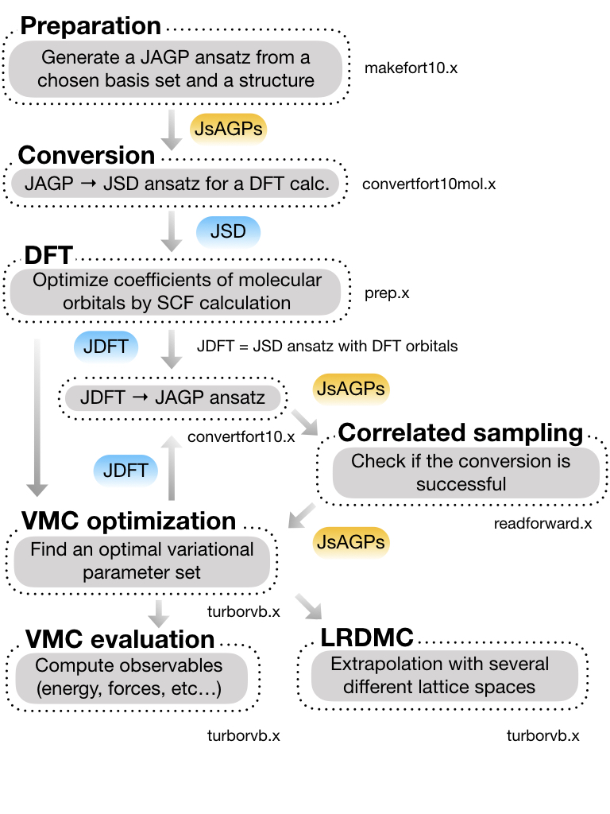

Basic workflow
This page outlines a typical path for running TurboRVB: from building or converting a trial wave function in fort.10 format, through optional DFT-based preparation, variational optimization, and finally production VMC (or related QMC) runs. The exact order depends on your project—for example, you may skip DFT if you already have a suitable fort.10—but the diagrams below show how the pieces fit together in many tutorials.
The workflow is intentionally modular: each box in the figures corresponds to tools and input files documented elsewhere in this manual. Use the reference links at the bottom to jump to command-line details and examples.
Overview
The first figure gives a high-level view: data and programs flow from an initial guess for the wave function toward optimized parameters and statistical estimates of energies and other observables.
{kind=link}

Detailed workflow
The second figure is the detailed workflow used in the tutorial (see 01_01Hydrogen_dimer). It is more granular than the overview above and matches the step-by-step exercises you will follow there.

If you are working through the tutorial, treat this diagram as a roadmap: complete each stage in order unless the text explicitly says a step is optional.
Reference link
Below, each item names a stage in the workflow and points to the commands or scripts that implement it. Open the linked pages for syntax, namelists, and typical use cases.
Prepare ``fort.10`` (trial wave function)
You need a valid
fort.10before runningturborvb.x. It can be generated from scratch, converted from another format, or adapted from a previous QMC run.DFT (optional initial orbitals)
For many molecular or solid setups, a DFT calculation (e.g. with the built-in prep machinery) provides molecular orbitals or a reasonable single-particle starting point that is then embedded or converted into TurboRVB’s Jastrow–geminal / AGP style
fort.10.Wave-function optimization
VMC with energy minimization improves Jastrow factors, geminal/Pfaffian parameters, and possibly orbital coefficients. Monitoring tools help you judge convergence (energy,
devmax, etc.) before long production runs.VMC (sampling and forces)
After optimization—or with a fixed trial wave function—you run turborvb.x for importance sampling, energies, and optionally forces. Shell helpers can post-process binary outputs.
Convert a JDFT-style wave function to JsAGPs
When your starting point is a JDFT (Jastrow + DFT-like) form, dedicated converters map it to a JsAGPs (Jastrow + symmetrized geminal power) representation that matches TurboRVB’s standard AGP conventions. Copy utilities can merge Jastrow and determinant pieces from different files.
Sanity check (conversion / forward-walking data)
After nontrivial conversions or when using scratch output, it is good practice to verify that files are consistent and that binning or forward-walking data look reasonable before trusting long statistics.